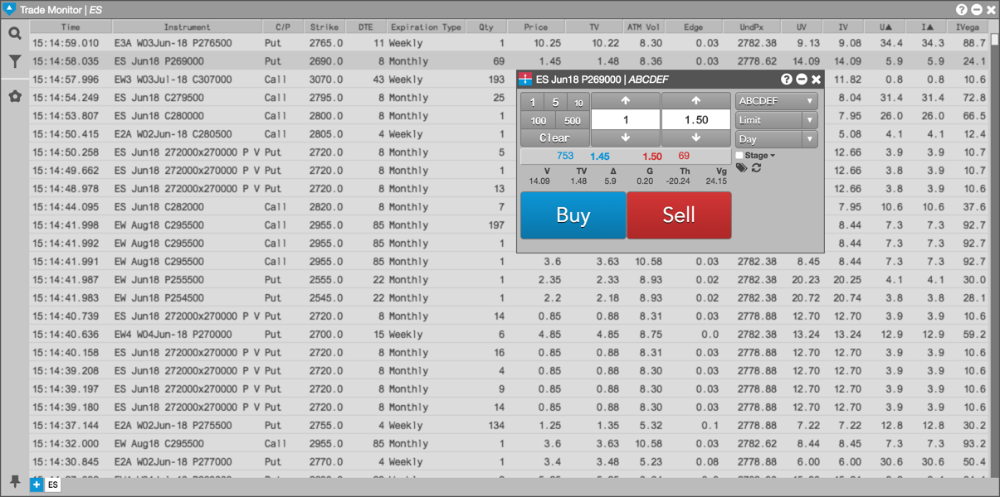

You can submit an order by opening MD Trader® or the Order Ticket from within the Options Trade Monitor. When monitoring trades in the widget, a single click on a trade bid or ask price or quantity or a theoretical volatility (TV) value in the monitor launches a floating order ticket seeded with data for the corresponding instrument.
In addition, you use the context menu to open MD Trader, an Order Ticket, Options Chain, or Vol Curve Manager seeded with market data for the selected instrument.
